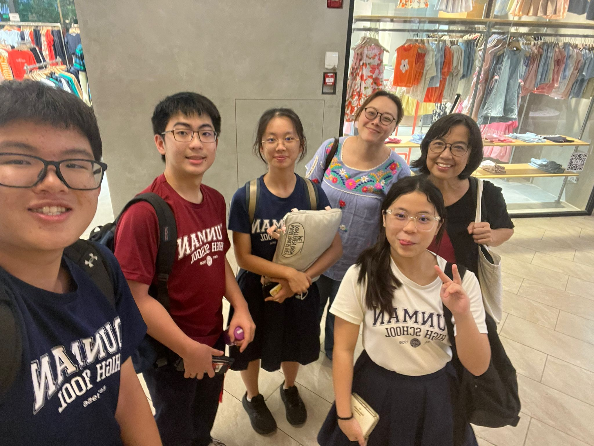

dunmanhigh.moe.edu.sg — ASP ↗
dunmanhigh.moe.edu.sg — ASP ↗
The Art Special Programme (ASP) is a platform for students who are committed and passionate about Art to further their Art education beyond the compulsory Art subject. Taken as an examinable subject in Years 1–4, it provides students with deeper understanding of various art elements and design principles, and possibilities to explore a wider range of media and techniques. ASP students are also given opportunities to visit museums and platforms to showcase their talents through exhibitions.
 dunmanhigh.moe.edu.sg — BSP ↗
dunmanhigh.moe.edu.sg — BSP ↗
Students from the BSP will jointly participate in two signature activities organised by MOE, including a three-day camp held locally during the June holidays of Year 3 and the annual BSP Symposium during the March holidays of Year 4 and 5. School-based enrichment programmes include overseas immersions, learning journeys, inter-school forums, and lectures.
This was really one of the highlights of my year and I feel it is one of the best opportunities I have had.
Although we had not achieved the results we wanted, I managed to secure a Silver in the individual category. This was a disappointment to us all. However, this programme really tested my determination and resilience with two training sessions per week learning about new concepts. I really appreciate the great guidance of our teachers, Ms Ng and Ms Pear, and the friends I made in this programme. This is certainly not the end to my Geography journey as I will have the Geographer's spirit of inquisitivity in me forever. It also let me widen my options to consider taking Geography instead of Economics, but I am still deciding.

nusgeographychallenge.wordpress.com ↗